Carolyn Yu
👩🏻💻 Role
Researcher for defining challenges and residents’ needs and propose the potential solution.Designer for designing the responsive user interface and prototypes.
🛠 Method & Tools
- Method: Contextual Inquiry, Affinity Diagramming, Benchmark Analysis, JTBD, Card Sorting, Tree Testing, Prototype Evaluation.
- Tools: Optimal Workshop, Figma.
💪🏻 Collaborators
- Johna Shi
- Ben Fuller
🗓 Project Duration
Aug 31, 2021 – Dec 14, 2021
Overview
The Manhattan Community Board 3 (CB3) plays an important role in dealing with the welfare of the community of Chinatown and the Lower East Side. To improve the engagement between residents and community members, we redesign the CB3 website and focus on the experience of issue report service on the site.
Our Process
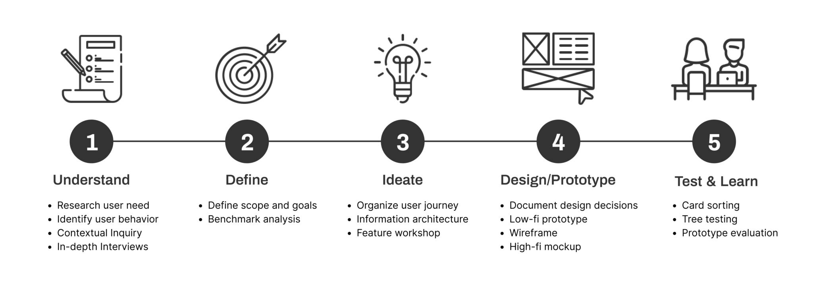
Challenges
Original CB3 Website
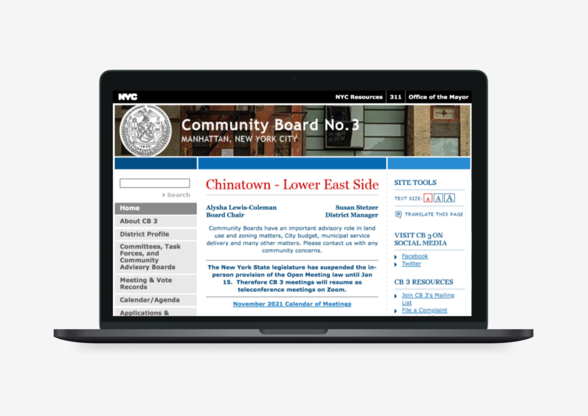
Original Version of CB3 WebsiteWith the influence of
However, we noticed that the original version of the CB3 website provides too many information and categories on this site, which may let users hard to navigate the desired information while browsing the page. Therefore, we decided to redesign the CB3 website information structure to improve the navigation and explore a specific feature to improve.
Observation in the field
To explore the potential needs for CB3 residents, we use the
- CB3 is a demographically diverse neighborhood.
- Many residents in the area do not have enough proficiency to communicate in English.
- Residents care about their community and want to contribute to the growth and development.
- People would report issues of all different kinds during the committee meeting.
However, residents are not the only people need to consider, the community board member, as the service providers, are also the essential roles that need to be understood during this stage.
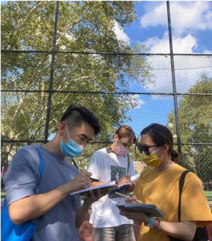
Our team observe in SDR Park“ The hardest part is to get everyone’s voice heard ”
-- Robin Schatell, Board Member
“ People don’t have the research expertise I have to solve problems, it’s gotta be a challenge for them ”
-- Henry, Journalist and Activist
After analyzing the field notes and the interview transcripts, we classified the findings with
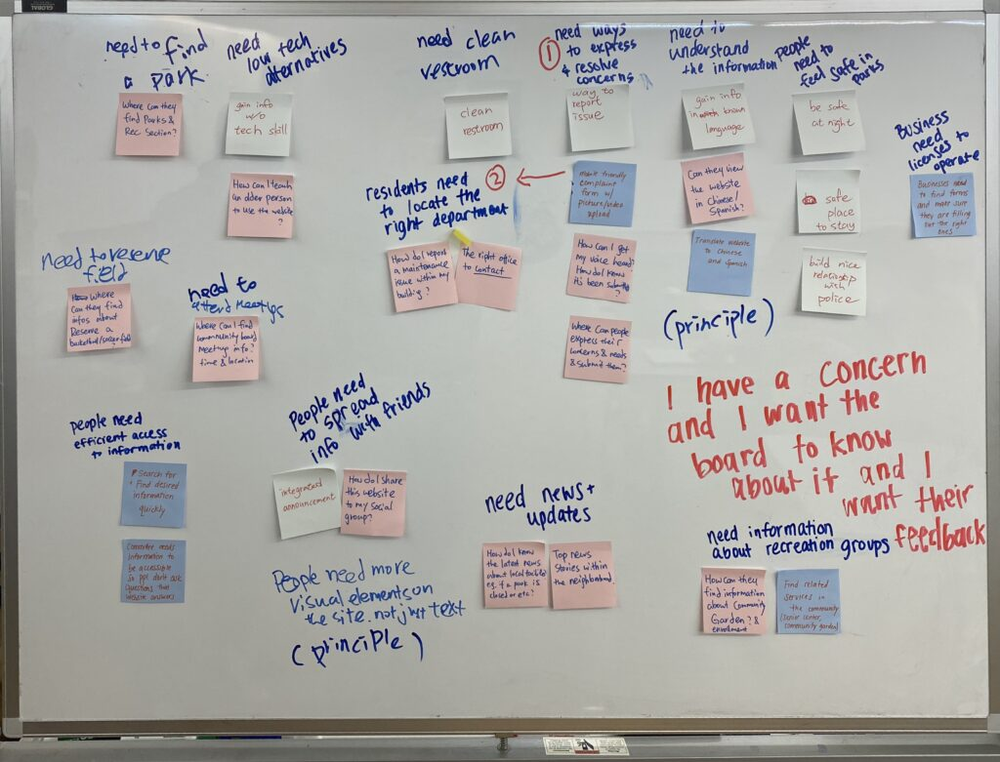
Organize the information with Affinity DiagrammingJob to Be Done (JTBD)
Therefore, to clarify the CB3 resident's needs in this demographically diverse area, we use
“ When I encounter a problem in my neighborhood,
I want it fixed quickly,
so I can improve the quality of life for myself and my neighbors.”
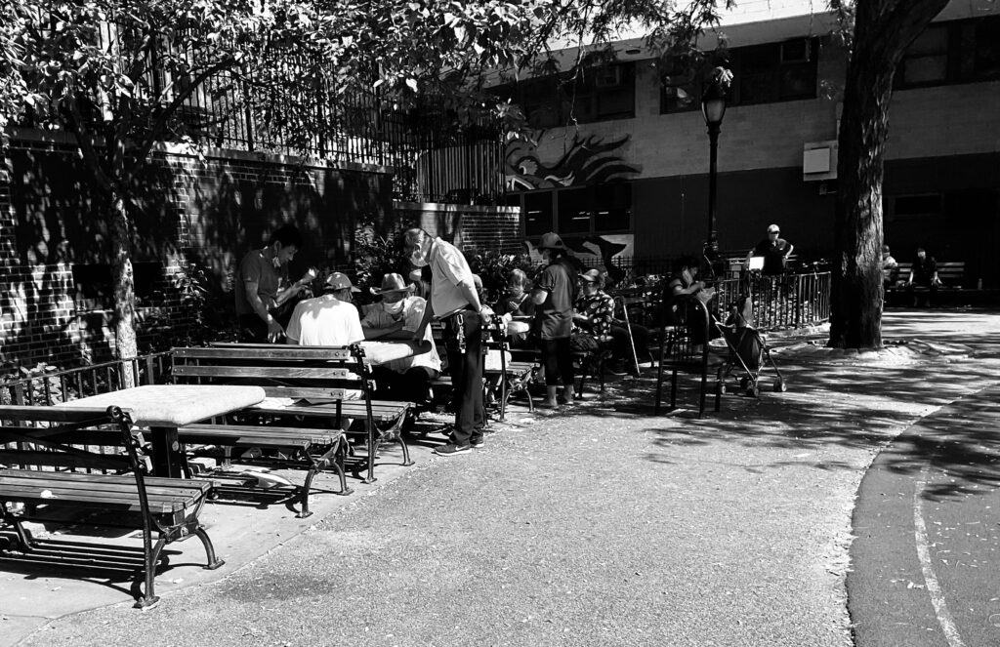
Our team observe in SDR ParkFindings Implementation
Issue Report Service
Therefore, we decided to focus on addressing the
For example, during the interview. One of my participants mentioned that:
“ When I was playing table games with friends in the park, I noticed that the branch above them and it seem like may fall at any time, I want to solve this problem, but didn’t know who and where he should ask for help.”
-- Resident of CB3, at SDR park (Sep 18, 2021)
User Journey
Base on the above experience, we create the user journey for the CB3 issue report service, there are 5 main steps:
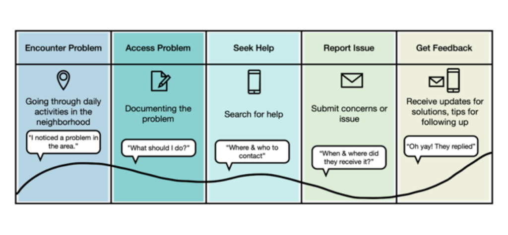
User Journey of CB3 issue report serviceBenchmark Analysis
Above all,
- There should be information about how to document concerns and build a case to help residents get their problems solved.
- The website needs to include accessibility features like translation and responsiveness that allow users to view on different devices.
- Categorizing problems helps users define the problems they are experiencing.
- Users should be able to include attachments when submitting their reports so they can provide evidence.
- The system should provide updates to users with the status of their reports.
Design Principles
Combine the above findings, we summarize the following 4 design principles for issue report service:
- All Voices be heard
- Language barrier
- Web Accessibility
- Discoverable
- Understandable
- Complete
- Clarity
- Expectation
- Feedback
- Residents Input
- Community Bonding
Design & Testing
Information Architecture
To reclassify the different types of information on the CB3 website, we use the
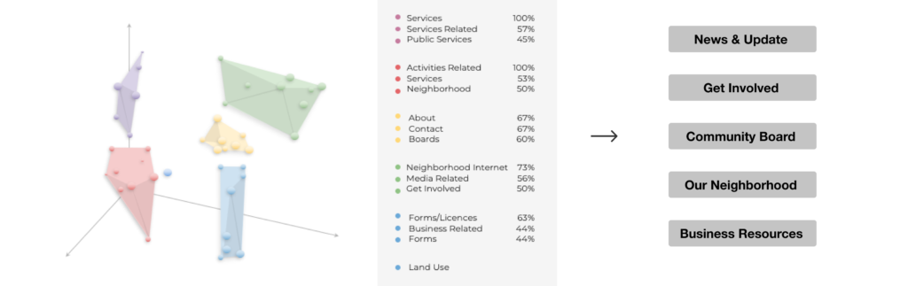
Card Sorting result analysis with 3D cluster features and the conducted 5 potential groupsTo evaluate the findability of topics of the proposed new information structure, we recruited 9 participants to do the
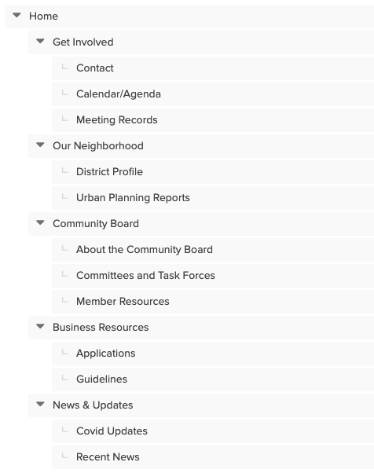
Information structure for the Tree TestRename the subcategory "Calendar/Agenda" to “Meeting Calendar” to enhance understanding.- Some of the task wording may have led to confusion and error paths.
- If recent news has more information on a different webpage, that should be
clearly linked . - People expect to find out what’s happening now in the
News & Updates section. - The “
Community Board ” category may be too general and act as a magnet. - Remove
task force language from the subcategory. - Member resources should be
renamed to “Board Member Resources”, and remove the priority. - The
Contact page should be higher up.
After having a deep understanding of the relationship between each card, we propose our new 6 categories:
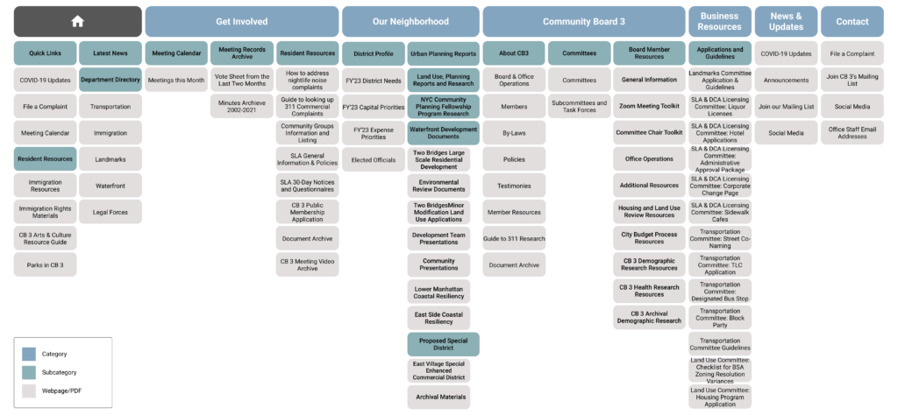
Proposed Site Map of CB3 WebsiteWireframe & Prototype
Base on the findings of Benchmark Analysis, we create a
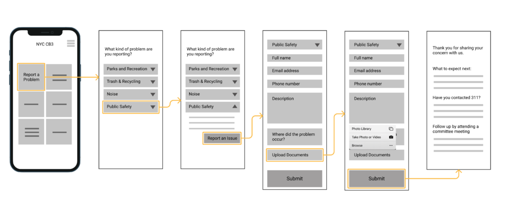
Low-fidelity prototype of CB3 Issue Report ServiceAfter testing with 6 participants, we summarized the following main findings:
- Users may not be familiar with the community board, so
context should be provided on thehomepage . - There should be
categories for users to report such asmiscellaneous problems and immediateurgency . - Some users may
follow up with other agencies if the information is provided. - Users would
expect to have information about what will be next after submitting the issue, such aswhen a response is received andwho is responsible for handling the issue.
To provide a more comprehensive solution to improve the engagement between CB3 residents and board members, we held a
- Redesign
meeting calendar page to improve attendance at meetings. - Provide
translation features in the report form to break the language barrier.
Base on the above ideas, the
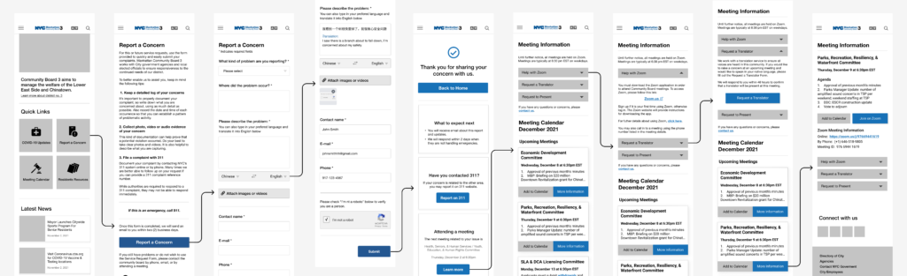
Wireframe of Issue Report Service with translation feature and the proposed Meeting Calendar pageInterface Design
appearance with other websites, we followed the NYC.gov website
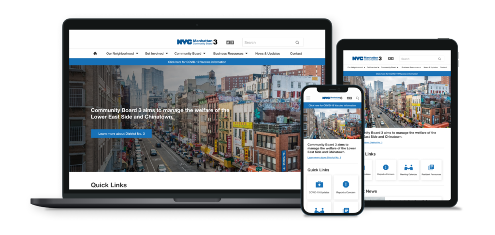
Mockup of the CB3 Home Page in different devices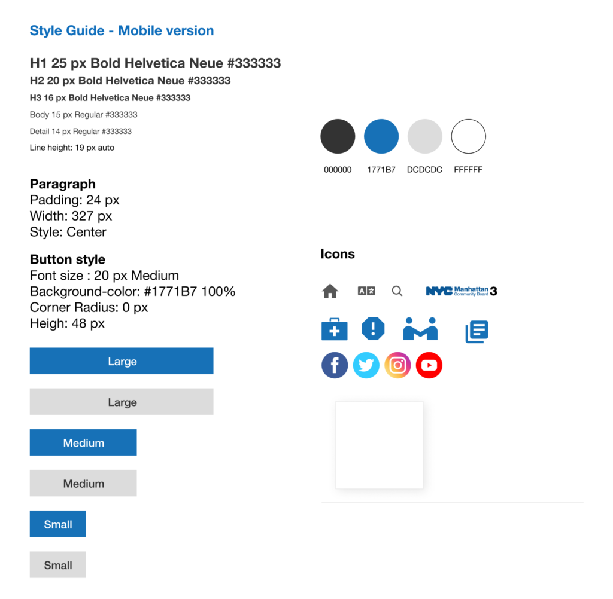
Style GuideConclusion & Next Steps
Through this project, I walk through the process between divergence and convergence, and learn the research methods from observing the challenges for the users in the field and how to narrow down those ideas into a specific issue. During the process, my team and I always keep users’ needs and challenges in our minds to find the solution to increase the findability and presentation of relevant information on the CB3 website.
In this project, we propose the